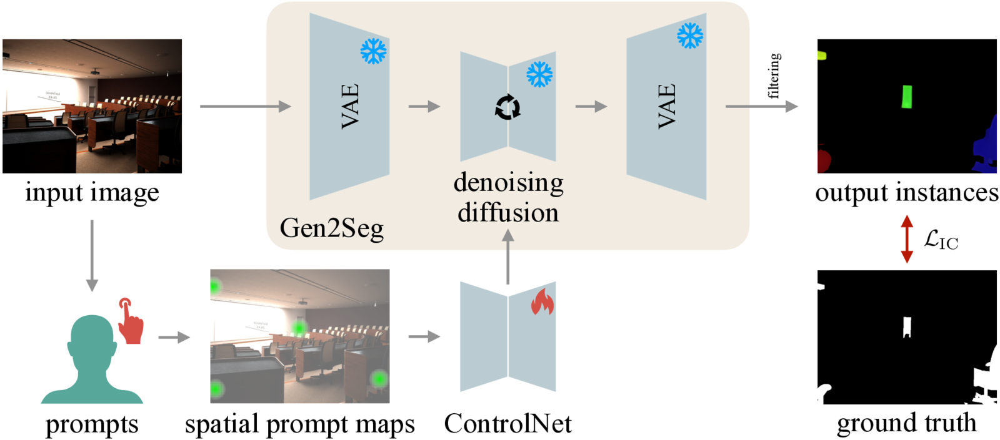
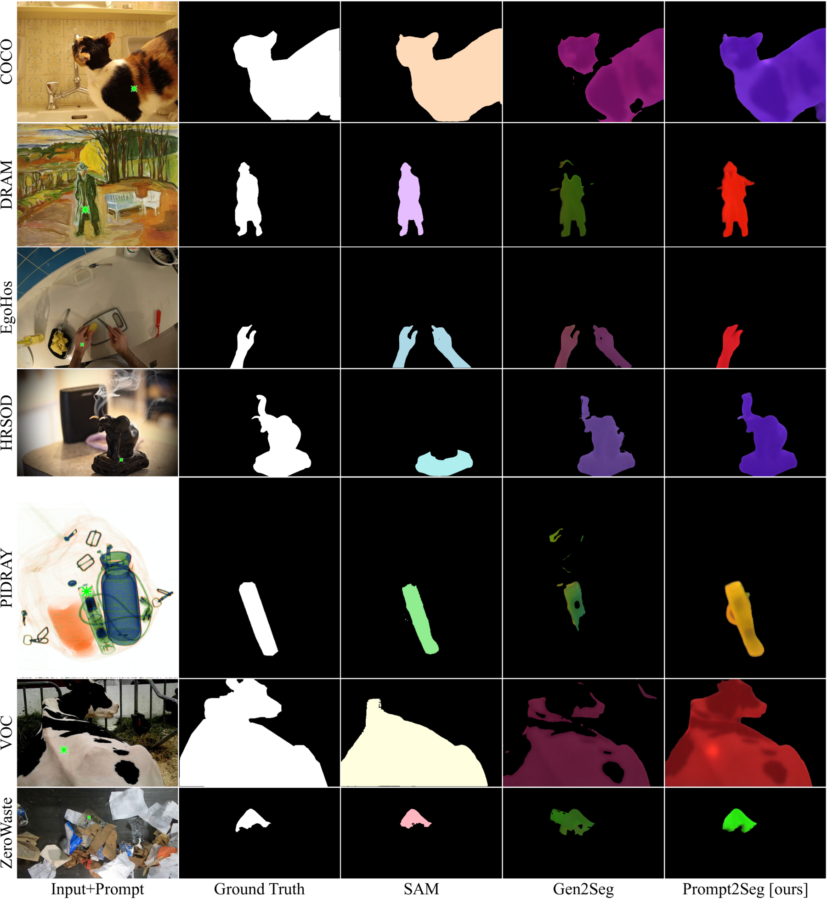
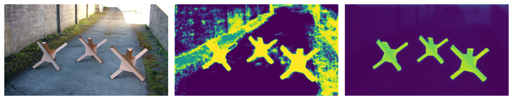

Several disruptive research directions have recently emerged in computer vision, including foundation models achieving previously unseen zero-shot performance in scene understanding, even interactively, and generative models that synthesize extremely realistic images. The latter have also been shown to be highly effective in scene understanding tasks thanks to their rich priors. However, for promptable segmentation, foundation models struggle with accurately segmenting an object's region, leading to false positives and over-segmentation. Notably, early attempts that leverage generative priors use prompts only during post-processing, yielding suboptimal segments because the process is agnostic to the user input.
We target these limitations with Prompt2Seg, a spatial conditioning framework for diffusion-based segmentation. Prompt2Seg augments a frozen diffusion segmentation model with a conditioning branch. Our approach takes spatial prompts, represented as 2D Gaussians or confidence maps, as explicit input signals, training the model to respond directly to user intent. Fine-tuned on a deliberately constrained set of object categories drawn from Hypersim and Virtual KITTI 2, Prompt2Seg generalizes zero-shot to a wide range of unseen object types and visual domains. We evaluate on seven datasets ranging from standard benchmarks to more challenging domains, including paintings, egocentric views, and X-ray data. Furthermore, we demonstrate that Prompt2Seg consistently outperforms the underlying diffusion segmentation backbone across all benchmarks. Our results suggest that the rich priors encoded in generative pretraining, combined with principled spatial conditioning, offer a compelling path toward broadly generalizing interactive segmentation without large-scale mask supervision.

Prompt2Seg predicts the mask of a target instance from an image and a sparse spatial prompt. It preserves the visual priors of a pretrained diffusion segmentation backbone while adding an explicit spatial control interface. A lightweight ControlNet-style branch receives prompt maps and injects prompt-dependent residuals into the frozen model.
Point prompts are converted into Gaussian maps at two spatial scales. The smaller scale preserves precise click localization, while the larger scale gives the model neighborhood context. Instead of segmenting all image regions and selecting an instance afterward, Prompt2Seg learns to generate the prompted foreground region directly against a black background.
| Method | COCO S | COCO M | COCO L | DRAM | EgoHOS | PIDRay | VOC | HRSOD | ZeroWaste |
|---|---|---|---|---|---|---|---|---|---|
| SAM | 57.0 | 59.7 | 57.6 | 51.6 | 59.8 | 44.2 | 45.5 | 71.2 | 45.4 |
| Gen2Seg | 8.3 | 38.4 | 58.7 | 47.5 | 40.0 | 34.9 | 39.4 | 64.5 | 45.2 |
| Prompt2Seg | 12.1 | 49.7 | 62.3 | 53.1 | 55.6 | 47.5 | 42.4 | 66.6 | 51.4 |
Prompt2Seg consistently improves over Gen2Seg and other synthetic-data baselines across seven zero-shot benchmarks. Compared with SAM, it is strongest on long-tail and domain-shifted data such as DRAM, PIDRay, and ZeroWaste, while remaining competitive on EgoHOS, VOC, and HRSOD. Furthermore, our method exposes substantial limitations on small objects, a weakness shared by Gen2Seg, suggesting it may be a fundamental challenge for diffusion-based approaches rather than specific to our prompting mechanism.
Boundary evaluation shows that Prompt2Seg delivers sharper mask contours than Gen2Seg. Despite using the same Gen2Seg model parameters, our method improves boundary quality by directly conditioning the diffusion process on the spatial prompt.
| Method | Boundary F | Precision | Recall | Boundary IoU |
|---|---|---|---|---|
| Gen2Seg | 47.09 | 42.62 | 52.61 | 19.16 |
| Prompt2Seg | 52.63 | 56.43 | 49.31 | 21.82 |

Qualitative results across natural images, artistic imagery, egocentric scenes, X-rays, salient objects, and waste scenes show how spatial prompting helps disambiguate target objects and preserve challenging boundaries.

Prompt2Seg is not limited to point prompts. It can also consume dense maps, such as anomaly scores or uncertainty maps from another model, and refine noisy source cues into cleaner localized masks.
| Method | AP ↑ | FPR ↓ |
|---|---|---|
| RbA | 85.42 | 6.92 |
| RbA + Prompt2Seg | 85.83 | 2.25 |
| Mask2Former | 78.45 | 11.83 |
| Mask2Former + Prompt2Seg | 88.41 | 4.95 |
@misc{alagoz2026prompt2seg,
title={Prompting Diffusion Models for Zero-Shot Instance Segmentation},
author={Alagöz, İrem Zeynep and Morbitzer, Nils and Ramazzina, Andrea and Navab, Nassir and Tombari, Federico and Gasperini, Stefano},
year={2026}
}